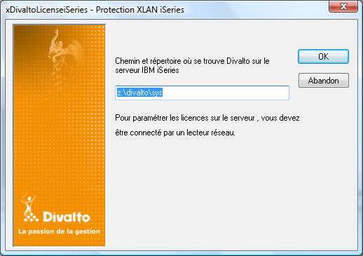

Cette opération est facultative si le serveur IBM i n'est pas un serveur de licences pour Divalto.
Elle nécessite la connexion d'un lecteur réseau permettant d'accéder au répertoire Divalto de l'IFS du serveur.
L'activation des licences s'effectue par la commande XDivaltoLicenseiSeries.exe.
Cette opération est similaire à l'activation des licences sur un serveur Windows (voir la rubrique "Mise en oeuvre du système de licences" du manuel de référence Harmony), à ceci près qu'elle commence par la sélection du chemin du répertoire Divalto/Sys de l'IFS du serveur IBM i :

Il faut spécifier ici le chemin Windows permettant d'accéder au répertoire /divalto/sys de l'IFS su serveur IBM i.
La commande XDivaltoLicenseiSeries.exe permet également de désinstaller les licences d'un serveur. Ce choix fournit une clé de désinstallation.